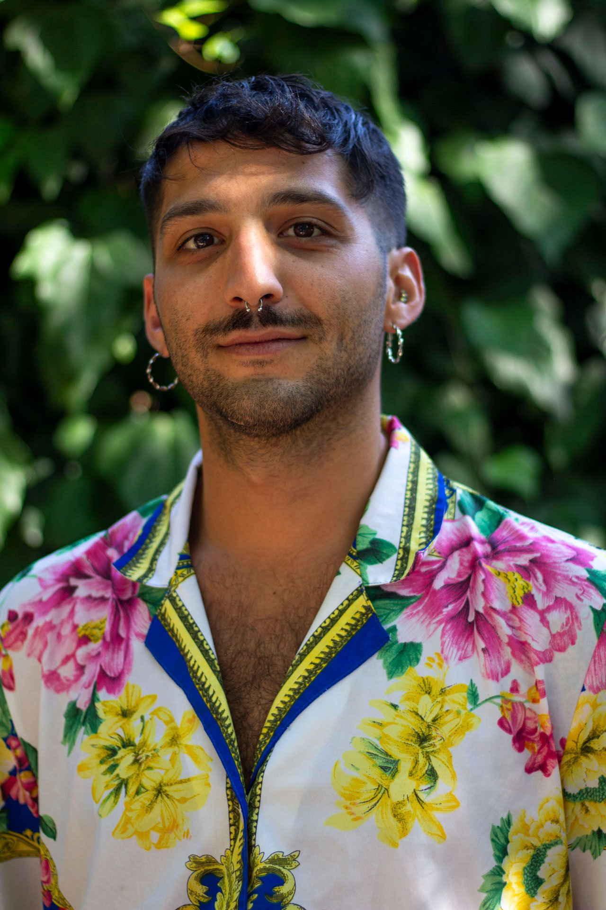

Ragiono per immagini, progetto strutture visive.
Filippo Boi — Media Designer


Approccio
Ogni progetto è un sistema prima che un singolo output. Costruisco linguaggi visivi coerenti, non soluzioni isolate.
Il design nasce dal contatto con le persone. Ascolto, osservo e traduco in forma ciò che emerge dalla relazione.
La ricerca precede e informa l'esecuzione. Il processo non è un mezzo — è parte del risultato.
Ogni progetto racconta qualcosa prima ancora di comunicare. Il senso viene prima della forma.
Profilo

Progetto sistemi visivi per dare forma, coerenza e direzione alla comunicazione. Il mio lavoro nasce dall'ascolto e vive di contesti: ogni cliente, ogni territorio, ogni comunità chiede un linguaggio diverso, e il mio compito è trovarlo insieme a chi ho davanti. Attraverso graphic design, installazioni e pratiche artistiche con la stessa postura — quella di chi progetta con le persone, non solo per loro. Ogni progetto è un sistema visivo, prima che un singolo output.